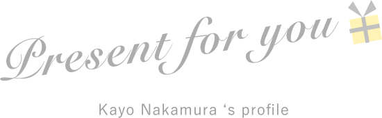
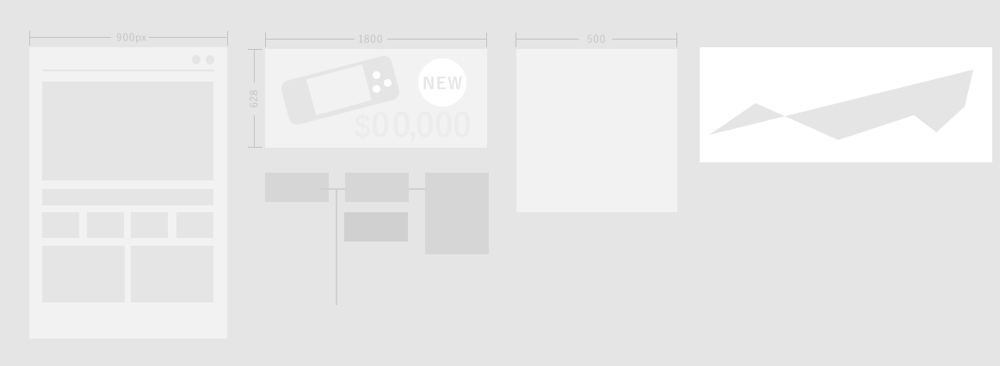
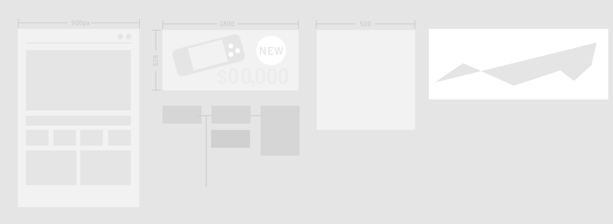
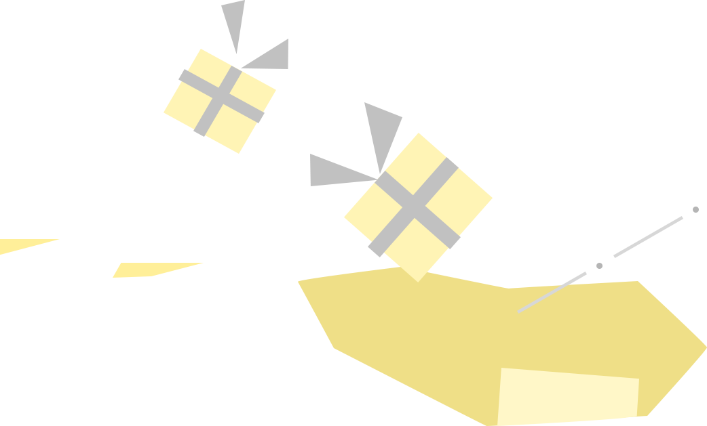
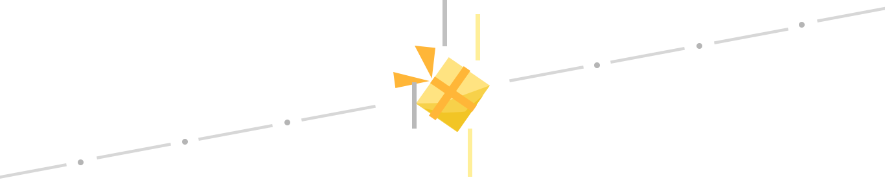

はじめまして。
中村佳代と申します。
2017年から、WEB広告デザイナー兼WEB広告ディレクター、WEBデザイナー、WEBディレクターと様々な経験をし、もう少しでWEB業界４年目になる25歳女性（O型）です。
私はWEBにおけるデザイン×マーケティングにとても興味があり、
数字を残すこ体験が、自分の身になっていく過程を感じることがとても好きです。
そのため、経験値を積み、自分も会社も豊かになれたらと思いながら生きています。

仕事で培ったものや、自主勉強で学んだものまで様々あります。
朝１時間早く起きて、カフェで気になっている分野の自主学習。帰宅をしてオンライン英会話で苦手克服するのが今の日課です。
（仕事でぐったりの時もあるので、負荷をかけすぎない程度に継続してます）
今の会社では、ぽんちゃんと呼ばれています。
これは、、比較的親しみやすいのかな？と勝手におもっています。
基本的には温和にいきたいタイプです。
飲み会などざわざわしているところも好きなので、誘われたら基本的に行きます。
仕事は仕事で割り切るタイプなので、普段よりもシャッキっと黙々と行うタイプです。
KPIが設けられている場合、通常業務を進めつつ、自分の課題の数字も届くように努力します。
入社して２ヶ月でCVRとクリエイティブ共に優秀であった人に送られる
「社内クリエイティブ賞」をWEBディレクター
としていただくなど、
活発にアグレッシブに作業は進める傾向にあります。
デザイナーの方とも連携して制作をしていく中で、相手の意見を受け入れつつ進めていくことが好きです。
人と会話をして、新しい発見や自分の成長に繋がると思うので、協力プレーの仕事が比較的好きです。
